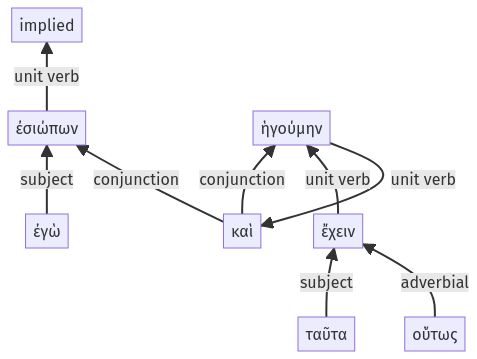

Lysias, Oration 1, 1.14.33-1.14.39a
1.14.12-1.14.32a | 1.14.40-1.14.53a
Sentence 33
1.14.33-1.14.39a
ἐσιώπων ἐγὼ καὶ ταῦτα οὕτως ἔχειν ἡγούμην.
1 ἐσιώπων ἐγὼ
1 καὶ
2 ταῦτα οὕτως ἔχειν
1 ἡγούμην
ἐσιώπων ἐγὼ καὶ ταῦτα οὕτως ἔχειν ἡγούμην.
Highlighting:
- connecting words
- unit verb
- subject
- object
Color code:
- Independent clause (level 1, intransitive verb)
- Independent clause (level 1, transitive verb)
- indirect statement with infiniti9ve (level 2, transitive verb)
